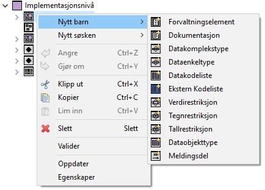
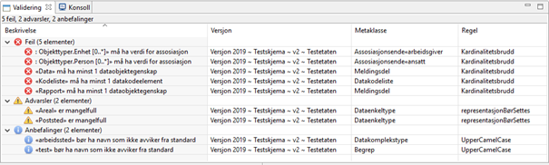
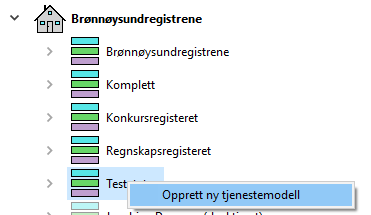
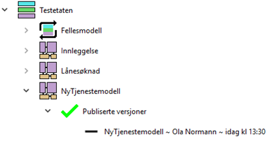
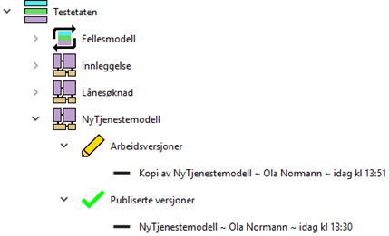
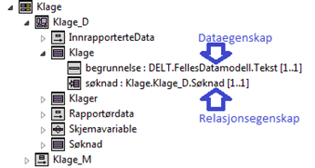
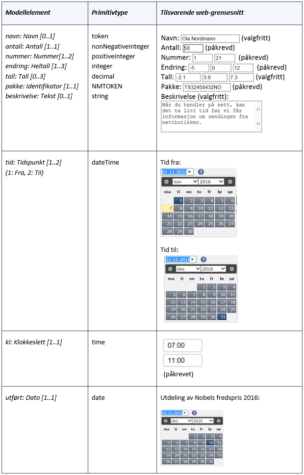

Brukerveiledning for SERES Domeneklienten
Hvordan bruke Domeneklienten for å modellere tjenestemodeller og generer XSD-er.
På denne siden:
Innledning
Domeneklienten er en modelleringsklient som primært brukes i forbindelse med tjenesteutviklingen i Altinn. Modelldataene blir lagret til en Elasticsearch dokumentdatabase gjennom rest-tjenester. Lagringsløsningen blir i resten av dokumentet kalt SERES repository.
Innholdet i Domeneklienten er delt inn i kataloger og underliggende domener. For hver tjenesteeier med informasjonsmodeller i løsningen vil det være en katalog og minst ett domene. Alle tjenesteeiernes brukere har lesetilgang til alle kataloger og mulighet for redigering i de katalogene de har skrivetilgang til.
I Domeneklienten er alle endringer tilgjengelig for alle som har skrivetilgang til katalogen med det samme en har lagret. Og man kan enkelt fortsette å jobbe på en arbeidsversjon noen andre har opprettet ved bare å åpne arbeidsversjonen (og så begynne å arbeide). Merk at det er viktig med dialog hvis flere skal jobbe på samme arbeidsversjon for å unngå at man skriver over hverandres data. Og gjennom versjonsinformasjon kan man se når og hvem som har oppdatert en versjon.
Domeneklienten inneholder funksjonalitet for validering av alle typer data i domenet. Feil som blir identifisert blir listet opp i en tabell, og for at rettingen skal bli enklere vil programmet navigere til der feilen i edisjonen er når du dobbeltklikker på den aktuelle tabell-linjen. I klienten er det også funksjonalitet for parameterstyrt generering av XSD-er.
I Domeneklienten finnes det ellers en funksjon som gir tilgang til hjelpetekster som har enda flere detaljer om klienten enn man finnes i dette dokumentet. Det finnes også et menyvalg for å sende en e-post til Digitalisering Servicedesk.
Installasjon og oppstart
På Altinn Digitalisering - utvikling finnes informasjon om SERES-løsningen og oversikt over de ulike verktøyene (klientene): https://altinn.github.io/docs/seres/

Lokal installasjon
Det er mulig å installere Domeneklienten på brukerens egen PC. Det finnes en egen veiledning «Lokal installasjon av Domeneklienten som du finner her: Brukerveiledning for lokal installasjon av Domeneklienten.
Installasjon i VMware
Hvis man ikke har Domeneklienten lokalt installert, kan man i stedet kjøre Domeneklienten i vår VMware-løsning med betegnelsen «SERES Desktop». Da kjører Domeneklienten på en virtuell maskin hos oss. Fremgangsmåten for hvordan VMwareklienten installeres og hvordan man logger på klienten er beskrevet i dokumentet Brukerveiledning for innlogging på Domeneklienten via VMware Horizon Client.
Det vil være noen små forskjeller i løsningen ved å kjøre Domeneklienten i VMware kontra å kjøre Domeneklienten som en lokalt installert klient. En av forskjellene er at hvis du bruker VMware så vil all lokal lagring bli lagret til et område på en server hos oss som du disponerer, og det blir tatt backup automatisk en gang i døgnet. Mens ved lokal installasjon så lagres lokal lagring på pc-en klienten er installert, og eventuell backup må håndteres av bruker. En annen forskjell er at det kun er mulig å angi at en XSD skal lagres lokalt ved XSD-genereringen når klienten er lokalt installert.
Innlogging
Når Domeneklienten startes, må brukeren først oppgi brukernavn og passord og så trykk på «Logg inn»-knappen.

Hvis brukeren har tilgang til flere brukermiljø så vil brukeren nå få spørsmål om å velge brukermiljø før de blir logget inn. Mens de som kun har tilgang til ett brukermiljø vil bli logget inn på rett miljø. Tjenester utvikles i Produksjonsmiljøet, mens egentrening utføres i Kursmiljøet. Testmiljøet er forbeholdt forvaltere av SERES-løsningen.

Det finnes lenker i innloggingsdialogen for å tilbakestille passord og endre passord.
Brukergrensesnitt
Brukergrensesnittet for Domeneklienten består av følgende fire paneler (sidestilte vinduer) der to av disse hver har to varianter basert på faner: «Domenepanelet», «Arbeidspanelet», «Egenskapspanelet», «Valideringspanelet», «Søkpanelet» og «Konsollpanelet».

Domeneklienten benytter, som Windows-programmer flest, mange funksjoner som aktiveres gjennom hovedmenyen, kontekstmenyer («popup menus») eller hurtigtaster.
Domenepanelet
Domenepanelet inneholder alle kataloger og underliggende domener som finnes i det aktuelle brukermiljøet. Under hvert domene finnes det modeller og hver av disse kan ha flere versjoner. En modellversjon vil ha en status som sier noe om kvalitets-/bruksstatus. Eksempel på status er «iarbeid» som forteller at modellen er en arbeidsversjon.
For å finne en modellversjon må man klikke seg nedover i nodetreet under riktig katalog til man finner den ønskede modellversjonen. En modellversjon blir tilgjengelig i Arbeidspanelet ved at man dobbeltklikker på den eller høyreklikker og velger «Åpne».
Arbeidspanelet
Arbeidspanelet, plassert i midten av Domeneklienten, viser frem alle metadataelementene i den valgte tjenestemodellen som noder organisert i et hierarki basert på eierskapsrelasjoner (komposisjoner i metamodellen). Øverst i hierarkiet finner vi noder for de tre modellnivåene Begrepsnivå, Strukturnivå og Implementasjonsnivå. Disse nodene og underliggende modeller, med unntak av tjenestemodell, er opprinnelig kopiert fra «Fellesmodell» når tjenestemodellen ble opprettet. «Fellesmodell» inneholder et sett med gjenbrukbare modellelementer og den blir lagt til domenet når domenet opprettes. Tanken er at man legger til nye gjenbrukbare modellelementer i modellene til «Fellesmodell» etter hvert som man modellerer. Dette for at man skal spare arbeid når man lager nye tjenestemodeller og bidra til at et modellelement ikke blir opprettet flere ganger med forskjellige identifikatorer, med de utfordringer det kan ha for f.eks. tjenesteeiers datamottak.
Kontekstmenyer for elementer
SERES Metamodell angir hvordan elementer av ulike metaklasser kan ha eierskap til hverandre. På denne basis vil funksjonaliteten for å opprette nye elementer være spesifisert. Figuren under viser kontekstmenyen knyttet til en datamodell som igjen har to submenyer “Nytt barn” og “Nytt søsken” for opprettelse av et element som vil ligge under / eies av datamodellen:

De to første submenyelementene «Forvaltningselement» og «Dokumentasjon» er standard for de fleste metaklassene. De siste ni er spesifikke for hva som kan ligge under aktuell metaklasse, i dette tilfellet en Datamodell. Et eksisterende element kan slettes (ett og ett) med høyreklikk og valg av «Slett» i kontekstmenyen. Det er også mulig å markere flere elementer i sekvens med klikk på første og «Shift» + klikk på siste. Bruk deretter «Delete»-knappen eller høyreklikk + «Slett» for å slette alle disse. Spredte elementer kan markeres med «Ctrl» + klikk og slettes på samme måte.
Elementene kan flyttes eller kopieres med «dra-og-slipp»-operasjoner. Alternativt kan en bruke høyreklikk + «Klipp ut» eller høyreklikk + «Kopi» for samme formål. Vi anbefaler den første varianten, både fordi den er raskere og fordi den er mer komplett i utførelsen.
Et element med ev. subelementer (subhierarki) kan modellvalideres med høyreklikk + «Valider», se detaljer under avsnittet «Valideringspanelet».
«Oppdater» gir en oppfrisking av element-visningen.
Kopiere elementer mellom modeller
Det er fullt mulig å kopiere elementer fra en modell til en annen modell i et domene eller en modell i et domene til en modell i et annet domene. Dette gjøres ved å åpne begge modellversjonene, der modellversjonen det skal kopieres til må ha status «iarbeid». Når du drar fra den ene fanen og slipper den i nedre del av den andre oppstår det et delt Arbeidspanel. Så kan en anvende dra-og-slipp elementer mellom modellversjonene.
Vær oppmerksom på at denne type kopiering er mangelfull slik at typereferanser ikke alltid blir med. Men det kan en fort ordne i etterkant gjennom lokal dra-og-slipp.

Løselementer
Det blir kontrollert om alle elementer som inngår i tjenestespesifikke datamodeller er med i den samlede meldingsmodellen når denne visualiseres eller brukes for generering av XSD-er. Elementer som ikke er med blir markert med rød farge i Arbeidspanelet:

Slike rødmarkerte «løselementer», har ingen aktiv funksjon og er derfor i prinsippet overflødige. Det kan også indikere at det er en feil eller mangel i modelleringen, og det bør sjekkes ut først. Eventuelt kan de vurderes slettet eller flyttet til en felles datamodell under «Fellesmodell».
Egenskapspanelet
Egenskapspanelet viser samlingen av egenskaper for det valgte elementet i Arbeidspanelet. Egenskapspanelet har to faner Normale og Spesielle. Den første er standard og viser frem de mest brukte egenskapene, se figuren øverst. Den siste viser egenskaper som er aktuelle å bruke i spesialtilfeller.
Normale egenskaper
Egenskapspanelet, som vi finner ytterst til høyre i Domeneklienten, kan brukes til å se på og endre egenskapene for et valgt element i Arbeidspanelet.
Slik kan panelet se ut:

Panelet inneholder et antall felt- og listetyper med tilhørende knapper:
- Inndatafelt vises som:
 Her kan du legge inn en enkeltverdi som f.eks. navn.
Her kan du legge inn en enkeltverdi som f.eks. navn. - Flerlinjefelt vises som:
 Denne kan du bruke for tekst over flere linjer, som f. eks. beskrivelser. Her kan det være aktuelt med formatering, f.eks. i form av HTML.
Denne kan du bruke for tekst over flere linjer, som f. eks. beskrivelser. Her kan det være aktuelt med formatering, f.eks. i form av HTML. - Enkeltvalgliste åpnes med:
 Her kan du velge ett element fra en liste, f.eks. en type for en egenskap.
Her kan du velge ett element fra en liste, f.eks. en type for en egenskap. - Enkeltvalgsletting aktiveres med:
 Her kan du fjerne tidligere valg fra en liste.
Her kan du fjerne tidligere valg fra en liste. - Flervalgliste åpnes med:
 Her kan du velge null til mange elementer fra en liste, f.eks. realisering av et strukturelement.
Her kan du velge null til mange elementer fra en liste, f.eks. realisering av et strukturelement. - Nedtrekksliste angis med:
 Her kan du velge ett element fra en fast kodeliste, f.eks. teksttype eller språkkode for et Dokumentasjon-element.
Her kan du velge ett element fra en fast kodeliste, f.eks. teksttype eller språkkode for et Dokumentasjon-element.
De viste knappene står til høyre for feltet som viser verdiene som ev. er satt, se figuren øverst på siden.
I tillegg finnes det felter som er skrivebeskyttet. Disse blir vist som:  Slike felter har gråfarget tekst og bakgrunn og brukt f.eks. for guid-verdier.
Slike felter har gråfarget tekst og bakgrunn og brukt f.eks. for guid-verdier.
Spesielle egenskaper
Denne fanen viser de mer særegne egenskapene, slike som kategoritilknytning, abstraktangivelse, arverelasjon/er, annoterende elementer, verdirestriksjon, alternativ identifikator, navigeringshierarki (Kodebiblioteket). I tillegg angis metaklasse og navn også her.

Modellering av relasjoner
Modellering innebærer blant annet å sette relasjoner mellom par av metadataelementer. Dette gjøres i Egenskapspanelet.
Relasjonene kan ofte betraktes å være rettet oppover eller nedover:
- Oppover betyr f. eks. at en fra en tjenestemodell refererer elementer i felles datamodell (gjenbruk), og fra felles datamodell refererer til elementer på strukturnivå (realisering) og fra strukturnivå refererer begreper (annotering).
- Nedover er de samme relasjonene sett motsatt vei, f. eks. at en velger et begrep i Arbeidspanelet og så i Egenskapspanelet velger hvilke elementer som annoterer til begrepet.
Med basis i dette bildet, anbefales det å modellere relasjoner oppover. Det betyr at en bruker enkeltvalglistene og ikke flervalgslistene.
«Modellering oppover/nedover» må ikke forveksles med «bottom-up/-down»-modellering.
Valideringspanelet
Valideringspanelet er et panel nederst på skjermen som viser resultatet av modellvalidering.

Valideringselementene er fordelt på fire kolonner:
- Beskrivelse: Tekst som forteller hvilket elementnavn som er berørt og hva som er feilen.
- Versjon: Navnet til versjon, modell, domene og versjonsnummer der feilen er funnet.
- Metaklasse: Metaklasse for element som har feil.
- Regel: Navnet på regel som er brutt som refererer til modellvalideringsreglene som en finner i Domeneklientens hjelpetekster.
Ved å dobbeltklikke på en valideringsfeil får en merket det elementet i Arbeidspanelet som har utløst feilen.
Søkpanelet
For å finne et bestemt element basert på navnet, bruker du Søkpanelet til venstre i Domeneklienten:

Panelet deler plass med Domenepanelet og aktiviseres ved å trykke fanen “Søk”. Du skriver så inn søkeordet ditt og klikker på Søk eller trykker Enter.
Det søkes i utgangspunktet etter hele navnet på elementene, og det skilles ikke på store og små bokstaver, f. eks. «RF-1086». Hvis du er usikker på navnet, kan du søke på deler av dette ved å bruke jokertegnet * foran og/eller bak, f. eks. «RF-10*».
Søkefunksjonen er absolutt, dvs. når du søker etter elementer basert på et søkeord, så genereres det et utvalg basert på hele innholdet i domenet eller domeneedisjonen i søkeresultatlisten. Når du så søker på nytt med et alternativt søkeord, lages et nytt utvalg fra hele innholdet.
Du får tilbake hele hierarkiet ved å trykke på Nullstill-knappen (som kan være skjult slik at du må dra Arbeidspanelet i midten mot høyre).
Det er mulig å trykke inn/ut en eller flere av modellnivå-knappene (Begrep, Struktur, Implementasjon). Når knapp-konturene er borte med bare teksten tilbake, vil ingen elementer fra tilhørende modellnivå tas med.
Hvis du har funnet et element du ønsker å jobbe med, dobbeltklikker du på dette. Det blir da merket i Arbeidspanelet med tilhørende egenskaper vist i Egenskapspanelet.
Konsollpanelet
Konsollpanelet er et panel nederst på skjermen som deler plass med Valideringspanelet. Panelet viser «det indre liv» (backend) for Domeneklienten i pålogget utgave av SERES Repository.
Både normale operasjoner og kritiske feil som oppstår vil angis her.

Visualisering av meldingsmodell
Brukeren kan visualisere en meldingsmodell i en nettleser:
- I Arbeidspanelet velger du den meldingsmodellen du vil visualisere. (For elementer av andre metamodeller vil valget ikke være til stede.)
- Høyreklikk og velg Visualiser i nettleser.
- Du får da opp en tre-basert grafikk som viser en meldingsmodell med alle subelementene som inngår.
Grafikken viser akkurat det som vil inngå i XSD-en generert fra samme meldingsmodell. Det er også mulig å generere en grafikkfil av type “png” med samme innhold.

Nedenfor er et utsnitt av samme der detaljene trer bedre frem. Vi ser at hver elementnode er representert med navnet og metaklasseikonet samt et minus- eller plusstegn og ev. multiplisitet:
- Et plusstegn forteller at detaljene er “gjemt/kollapset” i noden. Dette er standard når detaljene er representert et annet sted i grafikken for å unngå rekursjon og spare plass. De skjulte detaljene under plusstegnet kan vises frem (ekspanderes).
- Et minustegn sier at alle detaljene er vist frem (ekspandert node). Detaljene etter minustegnet kan kollapses.
- Dersom uendelig-symbolet (∞) er angitt, betyr det at modellen i denne noden inngår i en potensialt ikke-terminert rekursjon (syklisk modellstruktur). Dette betyr at modellen inneholder typereferanser som går tilbake til utgangspunktet, umiddelbart eller via en eller flere mellomliggende elementer. Eksempel på det første er Dataobjekttype «Person» som kan ha Dataegenskapen «barn» av type «Person». Det er da essensielt at en slik Dataegenskap har minimum multiplisitet 0 slik at slektskapstreet av personer kan termineres.
- For egenskaper er multiplisitetsparet angitt, f. eks. [0..*], se eget avsnitt om multiplisitet.

Brukeren kan:
- Lukke og åpne et element ved å trykke på “+/-” eller dobbeltklikke på elementet
- Velge et element (som markeres med grønn tekst) og se mer informasjon i egen visning nederst på siden. Forvaltingselementer og dokumentasjon vises her i tillegg til de andre egenskapene for elementet.
- Flytte rundt i treet ved å klikke på bakgrunnen, holde museknapp inne og så dra bildet i ønsket retning.
Generere grafikkfil
Den samme grafikken som kan genereres i en nettleser kan også legges ut på en grafikkfil av type “png”. Denne egner seg godt til å tas inn i dokumenter som beskriver modelleringen. Filen tas ut ved å høyreklikke på en meldingsmodell Arbeidspanelet og velge “Visualiser som bildefil”. Den lagres på brukerens lokalfilområde under mappen “bilder”. Dersom “png”-filer er knyttet til et grafikkvisningsprogram, vil dette starte og vise grafikken. Her kan brukeren ev. lagre grafikkfilen til en annen mappe.
Grafikken er basert på JavaScript-biblioteket “Data-Driven Documents” (D3.js) sin visning “Collapsible Tree”.
Håndtere grafikkfil
Hvis en ønsker å lage en utskrift, kan en bruke «Paint» som alltid er til stede i Windows. Velg “Skriv Ut” + “Utskriftsformat”, og så “Skalering” + “Tilpass til”, f.eks. 3 x 1 sider.
Dersom grafikken overskrider 16384×16384 piksler, vil ikke Paint kunne åpne den. Det er da mulig å bruke andre bildeprogrammer eller konvertere bildefilen til en oppløsning som Paint klarer. Det finnes også mange open source- og gratisprogrammer til dette formålet. Man kan f.eks. bruke «ImageMagick» til å konvertere til et annet format eller redusere størrelsen. Så kan man bruke «PosteRazor» til å klippe opp bildet i flere sider, skrive det ut og så lime disse sammen til en stor «poster».
Rammeverk for modellering
Forbindelsen mellom SERES Repository og Domeneklienten er toveis. Gjeldende data kan hentes fra repository og senere kan brukerens endringer av modelldataene utført i klienten lagres til repository.
Etter pålogging får brukeren se listen over alle katalogene som finnes i det innloggede brukermiljøet. De katalogene som brukeren har skrivetilgang til vil være øverst og ha uthevet skrift. Under katalogen vil det minst finnes et domene, og under hvert domene vil det finnes modeller. Modellene vil være «Fellesmodell», som inneholder et sett med modellelementer som gjenbrukes i tjenestemodellene, og tjenestemodeller. En modell kan ha mange versjoner og hver versjon vil ha en status.
Brukeren kan laste ned, åpne og lese innholdet i alle modellversjoner som finnes under alle katalogene, med unntak av modellversjoner som er arbeidsversjoner eller forkastet og som ligger under en katalog som brukeren kun har lesetilgang til. For å kunne endre/bearbeide en modellversjon, må brukeren opprette en arbeidsversjon av den modellversjonen som skal være utgangspunktet til en ny godkjent modellversjon.
En arbeidsversjon som ikke er verdt å tas vare på, kan forkastes (se figurene nedenfor). Denne blir da lagt under noden «Forkastede versjoner» og blir ikke lenger tilgjengelig for videre bearbeidelse. Men det er fremdeles mulig å åpne den forkastede versjonen, og det kan lages ny arbeidsversjon eller helt ny tjenestemodell basert på denne.

Før arbeidsversjonen blir forkastet, får brukeren en mulighet til å angre:

Ny tjenestemodell - fra opprettelse til ferdigstillelse
En tjenestemodell kan opprettes på flere måter. Enten fra et domene, fra en publisert versjon av «Fellesmodell» eller fra en hvilken som helst tjenestemodellversjon. Tjenestemodeller som opprettes fra domenet vil få modellelementer fra den siste godkjente versjonen av «Fellesmodell», mens tjenestemodeller som opprettes fra en «Fellesmodell» eller tjenestemodellversjon vil få de samme modellelementene som modellen den opprettes fra.
Høyreklikk på domenet den nye tjenestemodellen skal ligge under og velg «Opprett ny tjenestemodell». Valget er kun tilgjengelig hvis du har skrivetilgang til katalogen.

Tilsvarende kan du også gjøre på en publisert versjon av «Fellesmodell» eller en tjenestemodellversjon. Men fra en tjenestemodellversjon vil du også kopiere selve tjenestemodellen.

Etter at du har valgt «Opprett ny tjenestemodell» får du opp dialogvinduet «Opprett ny modell». I feltet «Navn» angir du navnet til den nye tjenestemodellen. «Kildemodell» opplyser om hvilken versjon av «Fellesmodell» som vil blir brukt. Hvis du ønsker å bruke en annen versjon av «Fellesmodell» enn det som vises, må du opprette tjenestemodellen direkte fra ønsket versjon av «Fellesmodell». (Og) «Målorganisasjon» og «Måldomene» angir hvor den nye tjenestemodellen vil bli lagret, og er mulig å endre. Hvis du har skrivetilgang til flere målorganisasjoner (kataloger) kan du f. eks. opprette en tjenestemodell i et domene som tilhører tjenesteeier A som bruker fellesmodellen som tilhører tjenesteeier B.

Etter at du har trykket «Opprett ny modell» har du fått opprettet en arbeidsversjon som du kan begynne å jobbe med.

Lagring av arbeidet
Domeneklienten vil automatisk lagre edisjonen hvert 15. minutt, men du kan også bidra selv til dette ved å trykke «Ctrl-S» eller høyreklikke på arbeidsversjonen og velge «Lagre». Lagring skjer både til SERES Repository og til brukerens område på «SERES Desktop» (en samling virtuelle datamaskiner) eller til tilsvarende på brukerens datamaskin hvis Domeneklienten er lokalt installert.

Det anbefales at man jevnlig lagrer endringene sine. Og for å få satt GUID-er på alle elementene i datamodellen og gjøre disse tilgjengelig i grensesnittet, må man lagre endringene til repository. GUID for valgt element i Arbeidspanelet sees i Egenskapspanelet til høyre.

Hvis arbeidsversjonen godkjennes vil endringer som er gjort siden forrige lagring bli automatisk lagret før den blir publisert. Ved generering av en XSD, vil du få spørsmål om å lagre dersom det er gjort endringer siden forrige lagring.
Validering av modellene
Før en arbeidsversjon godkjennes bør alle elementer som er tilføyd eller endret valideres. Det er innført et antall regler som skal, bør eller kan oppfylles for at modellene som inngår skal ha god kvalitet for den videre bruk.
Validering kan skje på alle nivåer i domenet. Høyreklikk på et nivå, en modell eller et element i en modell, for eksempel en Tjenestemodell og velg Valider.

Hvis modellen er uten mangler, vil du få en bekreftelse etter valideringen:

Etter validering av en modell kan man se om det er mangler i modellen, for eksempel at Dataegenskapstype mangler type, eller har feil i multiplisitet. Er det mangler i modellen, får en et varsel i Valideringspanelet som ligger nederst i visningen for Domeneklienten, se nærmere detaljer i eget avsnitt Valideringspanelet lenger opp i dokumentet.
Når arbeidsversjonen er ferdig
Når arbeidsversjonen er ferdig bearbeidet og validert, må den godkjennes for at den skal få endret status til «Publisert» og således også bli tilgjengelig for de som kun har lesetilgang til katalogen/domenet. Arbeidsversjonen kan godkjennes av den samme som har jobbet med denne, men det anbefales at man får noen andre i sin organisasjon til å kvalitetssikre og godkjenne arbeidsversjonen.
Høyreklikk på arbeidsversjonen i Domenepanelet og velge «Godkjenn».

Før arbeidsversjonen endrer status til «Publisert», får brukeren en mulighet til å angre:

Vær oppmerksom på at det ikke er mulig å endre en publisert versjon tilbake til en arbeidsversjon. Det man kan gjøre er å opprette en ny arbeidsversjon basert på den publiserte versjonen og så endre status til den publiserte versjonen til «Historisk» og eventuelt endre versjonsnavn og/eller versjonsinformasjon.
Etter at arbeidsversjonen er godkjent etter status blitt endret til «Publisert».

Avslutte Domeneklienten
For å avslutte Domeneklienten, velg «Fil + Avslutt» fra filmenyen øverst til venstre eller klikk på krysset øverst til høyre.

Gjenoppta arbeid på en arbeidsversjon etter ny innlogging
Når du logger på Domeneklienten igjen for å fortsette arbeidet på en arbeidsversjon vil Arbeidspanelet være tomt. For å få åpnet arbeidsversjonen må man enten dobbeltklikke på arbeidsversjonen eller høyreklikke på arbeidsversjonen velge «Åpne».

Lage en ny versjon av en modell
En ny versjon av en modell vil som regel baseres på den siste publiserte versjonen av modellen, men den kan også baseres på historiske versjoner, forkastede versjoner eller arbeidsversjoner.
Høyreklikk på den versjonen som skal være utgangspunktet for den nye versjonen og velg «Opprett ny arbeidsversjon». Valget er kun tilgjengelig hvis du har skrivetilgang til katalogen.

Etter at du har trykket «Opprett ny arbeidsversjon» har du fått opprettet en arbeidsversjon som du kan begynne å jobbe med.

Versjonsinformasjon
Det blir registrert endringshistorikk på alle modellversjonene slik at man kan se når og hvem som har opprettet, oppdatert eller endret status på en versjon. Versjonen kan i tillegg gis et eget navn og det kan legges til informasjon eller forklaringer, f.eks. om hvilke endringer/oppdateringer den inneholder.

Oppbygging av domene med ulike modeller
Et domene (for en etat eller et fagområde) er delt inn i tre modellnivåer. Nivåene bør relateres til hverandre slik at man bygger opp et hierarki der etaten får en god oversikt over sitt domene.

Anbefalte arbeidsmåter
Vi anbefaler å begynne med å opprette innhold på «Fellesmodell». Denne inneholder et sett med gjenbrukbare modellelementer allerede fra starten av, men den må utvides og tilpasses til det enkelte domene. For eksempel kan en starte med Begrepsnivået. Da kan man opprette de begreper som skal til, gi definisjoner og ev. opprette relasjoner og Begrepskategorier. Når man har fått opp en del begreper kan man starte å jobbe på Strukturnivået.
Ved å bruke noe tid på Strukturnivået vil dette være besparende i det videre arbeid, spesielt hvis det skal opprettes flere tjenestemodeller. Ofte vil en Objekttype eller en Kodeliste benyttes i flere tjenester, kanskje også i samme tjeneste. Hvis en har et Strukturnivå med innhold som kan gjenbrukes, er «dra-og-slipp»-funksjonalitet en effektiv måte å jobbe på, dvs. at en benytter disse diverse steder. Dra elementer fra Strukturnivået og slipp dem på de respektive Datamodell-elementer.
Neste skritt kan være å lage felles datamodeller under Implementasjonsnivået. Dette kan f.eks. være datamodeller for bl.a. dataenkelttyper, kodelister og meldingsdeler som skal brukes i flere tjenestemodeller.
Etter at man har fått godkjent en oppdatert versjon av «Fellesmodell» er det klart for å jobbe med tjenestemodeller. Når man oppretter en tjenestemodell vil den, hvis den opprettes fra domene, få en kopi av siste godkjente versjon av «Fellesmodell».
Begrepsnivå
Her oppretter man begreper som man ønsker å knytte til øvrige elementer. For eksempel begrepet «Person». I dette tilfellet har den roller som «Kunde» og «Saksbehandler».

Man bør etablere og ajourholde domenets Begrepsnivå. Dette er blant annet med på å øke søkbarheten i domenet og gi en bedre oversikt over domenets begreper og strukturer. For å se bruken av begrepene bør man lage relasjoner til Struktur- og Implementasjonsnivå.
Det er også viktig å legge inn definisjoner for de enkelte begrepene. For eksempel kan «Bil» ha definisjon «Motorkjøretøy beregnet til transport av gods eller et mindre antall personer». Du skal kunne danne ei naturlig setning fra «<begrepsnavn> er <definisjon>». I tillegg kan begrepene relateres til hverandre med fire ulike begrepsrelasjonstyper.
Strukturnivå
Strukturnivået er “gjenbruksnivået”. Alt man ønsker å bruke flere ganger bør opprettes på dette nivået for senere å kunne gjenbrukes i ulike datamodeller på Implementasjonsnivået gjennom en slags «kloning». Innholdet på Strukturnivået skal være generelt og navngivingen og struktur bør gjenspeile dette.

Fra figuren ser vi eksempler på elementtyper (metaklasser) på dette nivået:
- Strukturmodeller som «Enkeltyper», «Kodelister», «Objekttyper» og «Komplekstyper»
- Enkeltyper som «Dato», «Navn» og «Tall»
- Kodeliste som «Organisasjonsform» med Kodelisteelementer «aksjeselskap», «enkeltpersonforetak» og «borettslag»
- Objekttype som «Person» med Egenskaper «navn», «fødselsdato», «fødselsnummer», «bostedsadresse» og «telefonnummer» samt assosiasjonsende «arbeidsgiver»
- Komplekstype som «Adresse» med Typeegenskaper «adresse», «postnummer» og «poststed»
Figuren viser innenfor hakeparenteser minimum og maksimum multiplisitet (nedre og øvre mulige antall forekomster), se eget avsnitt under om multiplisitet. Vi ser også i rundparenteser antall realiseringer av hvert av elementene på Implementasjonsnivå.
Når det opprettes objekter på Strukturnivå, bør man annotere disse opp til Begrepsnivået. Marker først Strukturelementet i Arbeidspanelet. I Egenskapspanelet velger man riktig begrep fra listen over mulige annoteringer. Alle begreper i domenet ligger i listen. Dersom begrepet ikke finnes i listen må dette opprettes på Begrepsnivå.

Multiplisitet
Multiplisitet er to tall som settes på egenskaper generelt. Dette er en nedre verdi (minimum multiplisitet) og en øvre verdi (maksimum multiplisitet). Dette tallparet angis i Domeneklienten slik det også angis i UML (Unified Modeling Language) innenfor klammeparenteser og angitt for egenskap av gitt type, her på Strukturnivå:
<Egenskap>: <Enkeltype> [<min>..<maks>]
f. eks. for Objekttype «Person» sin Egenskap «medlemskap» av Enkeltype «Organisasjonsnavn»:
- Person
- medlemskap: Organisasjonsnavn [0..5]
Dette angir at Person kan registreres å ha et medlemskap i 0 til 5 organisasjoner.
Implementasjonsnivå
Implementasjonsnivå er et modellnivå som inneholder metadataelementer med nødvendige detaljer for implementasjon av tjenester. Dette kan for eksempel være en innsendingstjeneste i Altinn.
Elementtypene (metaklassene) som dette nivået består av er beskrevet i de påfølgende avsnittene.

I disse kan man legge alle de elementene som har potensial for å brukes i flere tjenester, typisk Dataenkelttyper, Datakodelister og Datakomplekstyper. Når de er lagt inn i en felles eller delt datamodell, kan man bruke dem på tvers av alle Tjenestemodeller. Det bør opprettes relasjoner fra disse elementene til tilsvarende elementer på Strukturnivå (realiseringsrelasjoner). Antall felles datamodeller er fra null til mange.
Lager man typen/kodelisten basert på tilsvarende fra Strukturnivå ved å dra den ned til en Datamodell, opprettes koblingen automatisk. I eksempelet under ser vi Datakomplekstype «Adresse» på Implementasjonsnivå som realiserer Komplekstype «Adresse» på Strukturnivå:

Fra figuren på forrige side ser vi eksempler på noen av elementtypene (metaklassene) på dette nivået:
- To felles Datamodeller «FellesDatamodell» og «UDIdata»
- Dataenkeltyper som «Tekst», «Tall», «Postnummer» og «Dato»
- Datakodelister som «Allergi» og «Adressetype»
- Datakodeelementene «bosted», «post» og «jobb» under «Adressetype»
- Datakomplekstype «Tidsrom»
- DataTypeegenskapene «fra» og «til» under «Tidsrom»
- ORDataenkeltype som «EnhetOrganisasjonsnummer»
- ORDatakodeliste som «PasientKjønn»
- Tallrestriksjon som «TallrestriksjonKroppshøyde» «TallrestriksjonKroppshøyde»
- Verdiområde 0.10 – 2.80 under «TallrestriksjonKroppshøyde»
- Tegnrestriksjon som «TegnrestriksjonNavn» og «TegnrestriksjonFnr»
- Verdirestriksjon som «VerdirestriksjonFnr»
- Dataobjekttyper som «Person» og «Enhet»
- Dataegenskap for Dataegenskap «type» under «Person.adresse»
- Meldingsdel som «Informasjon»
- «Dokumentasjon» under Fødselsnummer
Tjenestemodell
Tjenestemodell er innrammingen av den enkelte tjenesten. Hver tjeneste knyttes altså til en egen Tjenestemodell. Denne opprettes direkte under Implementasjonsnivået. En Tjenestemodell har en Meldingsmodell og kan ha en til mange Datamodeller og en til mange Presentasjonsmodeller. Ved opprettelse av en Tjenestemodell, opprettes det automatisk en Meldingsmodell og en Datamodell med navn som bygger på Tjenestemodellnavnet.
Tjenestespesifikk datamodell
De tjenestespesifikke elementene med ev. restriksjoner som skal være med i tjenesten spesifiseres i en tjenestespesifikk Datamodell, ikke i en felles Datamodell. Navngivning av elementene her bør være beskrivende i henhold til tjenesten som skal opprettes. Elementer med gjenbrukspotensial legges derimot i en felles datamodell.
Meldingsmodell
En meldingsmodell er grunnlaget for en meldingsspesifikasjon (XSD) som beskriver innholdet og strukturen i en melding. Modellen består av meldingsdeler som fungerer som meldingens innholdsfortegnelse. Vi opererer vanligvis med én meldingsdel som beskriver den som rapporterer inn i tjenesten, for eksempel en «Søker». Saksinnholdet i tjenesten inngår i en eller flere andre meldingsdeler. Meldingsdelene består i sin tur av Dataegenskaper og Relasjonsegenskaper som igjen er relatert til Dataenkeltyper, Datakodelister og Dataobjekttyper osv.
Når man oppretter elementer på Implementasjonsnivå via dra-og-slipp-operasjoner fra Strukturnivået, vil elementtypene (metaklassene) korrespondere på følgende måte:
| Strukturnivå | Impementasjonsnivå | Kommentar |
|---|---|---|
| Objekttype | Dataobjekttype | Sammensatte typer med identitet |
| Egenskap | Dataegenskap | Egenskap til (Data)Objekttype |
| Enkelttype | Dataenkelttype | Type til (Data)Egenskap |
| Kodeliste | Datakodeliste | Type til (Data)Egenskap |
| Kodelisteelement | Datakodeelement | Kodeelement til (Data)Kodeliste |
| Komplekstype | Datakomplekstype | Sammensatte typer uten identitet |
| Typeegenskap | DataTypeegenskap | Egenskap til (Data)Komplekstype |
Elementer som datamodellen består av er beskrevet i de påfølgende avsnittene.
Primitivtyper
Primitivtyper er de innebygde datatypene for den Plattform modellene transformeres til. Primitivtypene har alle forskjellige egenskaper og er en «startrestriksjon» for en Dataenkeltype. Benytter man gode Primitivtyper, er det ikke alltid nødvendig å definere Verdirestriksjoner og Verdiområder på Dataenkeltypene.
Eksempel på Primitivtype: decimal - Alle reelle tall (som inkluderer heltall):
-1035, -3.7, 1.45, 40, 12456.4567
Merk at dersom Primitivtypene ligger i flere utgaver av XSD-plattformen, må Plattformene slås sammen gjennom å slippe den/de Plattformen/e som skal fjernes på den ene Plattformen som skal beholdes.
Disse knyttes til i Egenskapsvinduet, her til Dataenkeltype «Beløp»:

For eksempel:
- alternativ: representasjon boolean
- beløp: representasjon decimal
- heltall: representasjon integer
Primitivtype skal også knyttes til Datakodeliste slik at kodeverdiene kan valideres i XSD-ene. Klikk på en Datakodeliste og knytt til representasjon i Egenskapspanelet.

Relasjonsegenskap
Når en Dataobjekttype inneholder en Relasjonsegenskap, benyttes (normalt) en annen Dataobjekttype som type. I eksemplet under er «Søknad» en Dataobjekttype som brukes som type til Relasjonsegenskapen «søknad» i Dataobjekttypen «Klage»:

- Relasjonsegenskap: Når en Dataobjekttype benyttes som egenskapens type. Egenskapstypen kan være den samme som modertypen og da kalles dette en «egenreferanse». Et typisk eksempel er Dataobjekttype «Person» sin Relasjonsegenskap «barn» av type «Person».
- Dataegenskap: Dersom en Dataenkeltype, Datakomplekstype eller Datakodeliste benyttes som type, opprettes det en vanlig Dataegenskap.
Datakodeliste
Datakodelister har samme struktur som Kodelister fra Strukturnivå:
| Datakodeliste | Sivilstand |
|---|---|
| Datakodelement | «ugift» |
| Datakodelement | «gift» |
| Datakodelement | «partnerskap» |
| Datakodelement | «separert» |
Datakomplekstyper
Datakomplekstyper har samme struktur som Komplekstyper fra Strukturnivå:
| Datakomplekstype | «Adresse» |
|---|---|
| DataTypeegenskap | «gateadresse»: tekst [muliplisitet] |
| DataTypeegenskap | «postnummer»: tall [multiplisitet] |
| DataTypeegenskap | «poststed»: tekst [multiplisitet] |
Generering av XSD
Når tjenestemodellen er ferdig utviklet, kan man generere XSD-er som blant annet kan brukes som datakilder i tjenesteutviklingen for Altinn.
Høyreklikk på en Meldingsmodell og velg «Generer XSD».

Det kommer da opp en XSD-genereringsassistent (wizard) som består av 2 til 4 sider.
Hovedvalg

Her er følgende informasjon låst:
- Domenenavn
- Tjenestenavn
- Modellnavn
Her spesifiseres følgende:
- Tjenesteversjon: Brukervalgt identifikator for den tjenesteutgaven en har som mål å utvikle
- Dokumentasjonsspråk: Språkkode som bestemmer hvilke elementer av type Dokumentasjon som blir lagt ut i generert XSD
- Justere XSD-parametre: Åpner opp side for setting av parametre for å velge detaljer i utforming av XSD.
- Generere for Kodebibliotek: Åpner opp side for setting av detaljer i XSD for bruk mot Kodebibliotek.
Se videre detaljer om bruk av XSD-genereringsassistenten under avsnittet Parametre for XSD-generering.
Lagring og publisering

Lagre lokalt?
Her velger du om XSD-en skal lagres på din lokale PC der du i neste felt kan angi «mappe». Dernest kan du angi «filnavn», dvs. den delen av filnavnet som i utgangspunktet forteller om modellgrunnlaget for XSD-en. I tillegg får filnavnet datostempel og identifikatorinformasjon om modell og XSD.
OBS: Slik lokal lagring er bare tilgjengelig om en kjører en lokal installasjon, dvs. ikke ved kjøring i VMware. Denne lagringen kommer i tillegg til at XSD-en alltid lastes opp til SERES Produktforvaltning.
XSD-status
Her angir du om denne XSD-en ved opplasting til SERES Produktforvaltning skal karakteriseres med statusverdien «utkast» eller «kandidat» der «utkast» er standardverdi. Totalt finnes følgende verdier, men de øvrige må settes etter pålogging i Produktforvaltningen:
- utkast: De første XSD-variantene som genereres fra en modell før en har sjekket at de inneholder de elementene og har den strukturen de skal.
- kandidat: XSD-en er sjekket, validert og klar for å tas inn i en tjenesteutviklingsløsning, f.eks. Altinn TUL.
- produksjon: XSD-en er tatt i bruk i en løsning, f. eks. Altinn SBL.
- terminert: XSD-en har vært i bruk, men er tatt ut av produksjon.
- forkastet: XSD-en har aldri vært i bruk og ikke aktuell for senere bruk.
Endring av statusverdi for tidligere opplastede XSD-er gjøres i SERES Produktforvaltning etter innlogging. XSD-er som er gitt statusverdi «utkast» eller «forkastet», kan kun lastes ned av brukere som er innlogget i denne løsningen, mens XSD-er med statusverdi «kandidat», «produksjon» og «terminert» kan alle laste ned.
Send til e-postadresse/r
Her kan du angi en eller flere e-postadresser (med ‘;’ som skilletegn) hvor XSD-en vil sendes i form av et vedlegg.
Detaljer ved modellering og XSD-generering
Primitivtypers verdiområder
Dersom en benytter velvalgte Primitivtyper, kan en slippe unna å definere Verdirestriksjoner ev. Verdiområder for Dataenkeltyper:
| Primitivtype | Brukes for | Eksempler på bruk |
|---|---|---|
| decimal | Alle reelle tall også kalt flyttall (inkluderer heltall). | -1035, -3.7, 1.45, 40, 2456.4567 |
| integer | Alle heltall. | Alle positive og negative heltall. |
| gYear | Årstall | -0550 (550 år f. Kr.), 1814, 2011 |
| date | Datoer | -0500-03-31 (31. mars 500 år f. Kr), 0872-01-01, 2011-01-01 |
| time | Klokkeslett | 05:10:05, 13:40:00 |
| dateTime | Dato og klokkeslett. | 2011-08-01T12:00:00 (1. august kl. 12) |
| anyURI | Tekststreng som representerer en nettadresse for et dokument eller annen nettressurs (URN eller URL). | https://digdir.no/ |
| string | Tekststreng som tillater multiple blanke, innledende og terminerende blanke samt spesialtegn som linjeskift, tab-tegn m.m. | |
| normalizedString | Samme som over, men uten spesialtegn som linjeskift, tab-tegn m.m. | |
| token | Tekststreng som bare tillater enkle blanke, og ikke blanke i starten og slutten av strengen. | |
| hexBinary | Binære data kodet heksadesimalt. | |
| base64Binary | Tekststreng kodet i Base64-format aktuell for representasjon av vedlegg til et skjema for robust og effektiv transport. |
Kommentar: Det anbefales bruk av token eller normalizedString istedenfor string for de fleste strenger, noe som gir en strammere validering.
Anbefalt bruk av Dataenkeltype-navn til Primitivtyper
Primitivtyper er engelskspråklige og tekniske i navngivningen. Vi anbefaler derfor norske termer i form av Dataenkeltyper som uttrykker betydningen av de mest aktuelle Primitivtypene. Denne anbefalingen inngår i domenemalen som legges inn for nye domener.
| Dataenkelttype | Primitivtype |
|---|---|
| Nummer | positiveInteger |
| Antall | nonNegativeInteger |
| Heltall | integer |
| Tall | decimal |
| Beløp | decimal |
| Tidspunkt | dateTime |
| Klokkeslett | time |
| Dato | date |
| Årstall | gYear |
| ÅrOgMåned | gYearMonth |
| Måned | gMonth |
| MånedOgDag | gMonthDay |
| DagIMåned | gDay |
| Alternativ | boolean |
| Navn | token |
| Tekst | string |
| Identifikator | NMTOKEN |
| HexInnhold | hexBinary |
| Base64Innhold | base64Binary |
| URI | anyURI |
| Fødselsnummer | token med restriksjon [0-9]{11} |
| Organisasjonsnummer | token med restriksjon [0-9]{9} |
Ved innføring av nye domener i SERES Repository blir disse instansiert via en domenemal som inneholder disse Dataenkeltypene.
Når så disse Dataenkeltypene brukes som typer for Dataegenskaper i en Datamodell, kan egenskapsnavnene forenkles uten å miste semantikken:
- ansatte: Antall
- født: Dato
- lån: Beløp
- oppstart: Tidspunkt
- vekt: Tall
- åpning: Klokkeslett (butikk- og kontoråpningstid)
- lønning: DagIMåned (utbetaling av lønn)
En slik forenkling må selvsagt vurderes opp mot konteksten navnene inngår i ved videre bruk av modellene.
Modellering i relasjon til ønsket grensesnitt



Parametre for XSD-generering
Tjenesteversjon
Tjenesteversjon er en brukervalgt identifikator for den tjenesteutgaven en har som mål å utvikle basert på en valgt meldings- eller presentasjonsmodell. På denne måten kan en beholde modellnavnene uendret over tid selv om innholdet i modellene forandres etterhvert. Hver tjenesteversjon identifiserer et “snapshot” av en modell som kan bevares i XSD-format over lang tid. Mange parallelle øyeblikksutgaver av modellen kan eksistere parallelt.
En typisk verdi for tjenesteversjon kan være årstallet tjenesten skal tas i bruk, f. eks. «2016», eller det formelle navnet på hovedversjonen for en gruppe tjenester som samtidig skal driftsettes, f. eks. «2.09». Vær obs. på at om tjenesteversjon endres for en eksisterende tjeneste pga. modelljustering, vil tjenesten måtte reetableres i Altinn TUL. Dette er fordi tjenesteversjon inngår i navnet på XSD-navnerommet (“target namespace”). Eksempel på navnromsnavn: "http://seres.no/xsd/Testetaten/Lånesøknad_M/2016"
Her inngår domenenavn “Testetaten”, modellnavn “Lånesøknad_M” og tjenesteversjon “2016”.
Eksempler på fullstendige XPath-uttrykk (“Node expanded names”) som henter ut enkeltverdier fra en melding:
http://seres.no/xsd/Testetaten/Lånesøknad_M/2016/melding/Innsender/soeker/foedselsnummerhttp://seres.no/xsd/Testetaten/Lånesøknad_M/2016/meldingInnrapporterteData/boliglaan/laanebeloep
Dokumentasjonsspråk
Dokumentasjonsspråk er en språkkode som bestemmer hvilke elementer av type Dokumentasjon som blir lagt ut i generert XSD knyttet til det elementet som «eier» dokumentasjonen.
For hvert metadataelement kan det opprettes et antall slike Dokumentasjonelementer ved å høyreklikke på metadataelementet i Arbeidspanelet, velge Nytt barn og i Egenskapspanelet velge type og språk samt angi selve dokumentasjonsteksten. Hvilket dokumentasjonsspråk som er valgt avgjør da om teksten blir med ut i XSD-en. Dersom det velges et språk det ikke er opprettet Dokumentasjonelementer for eller ingen språk angis (standardverdi), kommer ingen slike med i XSD-en.
Følgende språkkoder er tilgjengelige i brukergrensesnittet:
- nb: Bokmål
- nn: Nynorsk
- se: Nordsamisk
- en: Engelsk
- de: Tysk
- fr: Fransk
- es: Spansk
- ru: Russisk
- pl: Polsk
- ur: Urdu
Følgende Dokumentasjonstyper legges ut med tilhørende XSD-attributt:
- beskrivelse (ikke for begrep) - seres:beskrivelse
- kommentar - seres:kommentar
- definisjon (bare for Begrep) - seres:definisjon
- alternativ term (bare for Begrep) - seres:alternativTerm
- “alle andre typer” - seres:dokumentasjon
Det valgte språket angis i schema-elementet:
<xsd:schema ... xml:lang="nb" />
For hvert metadataelement kan en opprette mange Dokumentasjon-elementer, ett for hver kombinasjon av type og språk.
Justere genereringsparametre
Det er mulig å påvirke innholdet i XSD-en gjennom avkrysning av boksen «Justere XSD-parametre»:

Tillat typegjenbruk?
Dersom avkrysset, vil XSD-en gjenbruke typedeklarasjoner på samme måte som i modellen som XSD-en er basert på. Hvis ikke avkrysset, vil det bli generert duplikate typedeklarasjoner om typer (dvs. Dataenkeltyper, Datakodelister, Datakomplekstyper og Dataobjekttyper) er referert flere steder.
NB! Hvis du genererer en XSD basert på en presentasjonsmodell hvor OR-spesifikke datatyper er brukt (dvs. ORDataenkeltyper og ORDatakodeliste), kan det være nyttig å ha denne parameteren avslått for å avsløre multippel bruk av disse OR-spesifikke datatypene fordi hver av disse bare skal brukes ett sted i modellen.
Hvis vi tenker oss to Dataegenskaper «Beskrivelse» og «Stedsnavn» som begge bruker Dataenkeltypen «Tekst», får vi følgende:
- Påslått: «Tekst» representeres bare en gang i XSD-en selv om den er referert to ganger.
- Avslått: «Tekst» representeres to ganger i XSD-en fordi den er referert to ganger i modellen, og XSD-en vil ikke validere.
Tillat særnorske bokstaver i element- og attributtnavn?
Dersom denne er avkrysset, vil de særnorske bokstavene ‘æ’, ‘ø’, ‘å’, ‘Æ’, ‘Ø’ og ‘Å’ som inngår i navn på modellelementer og attributter i annotation-delen beholdes uendret i XSD-en. Hvis parameteren ikke er satt, vil disse særnorske bokstavene bli omgjort (translitterert) til henholdsvis «ae», «oe», «aa», «AE», «OE» og «AA». Dette kan gjøres for å forhindre problemer i XML-verktøy som ikke fullt ut støtter tegnkodingen «UTF-8».
Merk at følgende ikke blir omgjort:
- GUID-strenger der domenenavn og/eller elementnavn inneholder særnorske bokstaver
- Dokumentasjon-tekster
- XML-kommentarer
GUID-er som XSD-attributter?
Dersom avkrysset, vil GUID-verdier for hvert av modellelementene bli tatt med som XSD-attributter knyttet til tilhørende typer eller elementer i XSD-en. En GUID er en unik identifikator som knyttes til hvert av metadataelementene som lagres i SERES Repository.
Eksempel på hvordan denne legges ut i XSD-en når parameteren er påslått:
<xsd:simpleType name="Epost" type="xsd:token" seres:guid="http://seres.no/guid/Testetaten/Dataenkeltype/EPost/1135632">
</xsd:simpleType>
Merk at det avsluttende tallet i GUID-ene er unikt for hvert metadataelement slik at en kan nøye seg med å bruke dette for identifikasjon av et element.
GUID-er som meldingsattributter via datasimpeltyper?
Dersom avkrysset, vil GUID-verdier for datasimpeltyper legges ut som validerende meldingsattributter for alle elementer som kommer fra en egenskap som har den tilhørende datasimpeltypen.
Datasimpeltype er en fellesbetegnelse (abstrakt super-metaklasse) for Dataenkeltype, Datakodeliste, ORDataenkeltype og ORDatakodeliste som er de metaklassene hvor dette ev. kommer til anvendelse.
Årsaken til at det er (OR)Dataenkeltypen eller (OR)Datakodelisten sin GUID som skal brukes og ikke Dataegenskapens, som hadde vært mest naturlig, er at opplegget skal svare til tilsvarende validering basert på ORid-er fra ORDataenkeltyper eller ORDatakodelister.
Eksempel på hvordan denne legges ut i XSD-en uten Altinn-tilpasning:
<xsd:complexType name="Dato" seres:elementtype="Dataenkeltype" seres:guid="http://seres.no/guid/Testetaten/Dataenkeltype/Dato/1135634">
<xsd:simpleContent>
<xsd:extension base="xsd:date">
<xsd:attribute ref="seres:guid" use="required" fixed="http://seres.no/guid/Testetaten/Dataenkeltype/Dato/1135634"/>
</xsd:extension>
</xsd:simpleContent>
</xsd:complexType>
Tilsvarende med Altinn-tilpasning:
<xsd:complexType name="Dato" seres:elementtype="Dataenkeltype" seres:guid="http://seres.no/guid/Testetaten/Dataenkeltype/Dato/1135634">
<xsd:simpleContent>
<xsd:extension base="xsd:date">
<xsd:attribute name="guid" type="xsd:string" use="required" fixed="http://seres.no/guid/Testetaten/Dataenkeltype/Dato/1135634"/>
</xsd:extension>
</xsd:simpleContent>
</xsd:complexType>
For ORDataenkeltyper og ORDatakodelister vil validerende attributter basert på ORid (Oppgaveregisterets «datadefinisjon») og GUID ligge parallelt.
Referanser til begrepets GUID?
Dersom avkrysset, vil alle elementer som har annotering til et begrep få et eget XSD-attributt «semRef» som peker til GUID-en for tilhørende begrep.
Merk at denne GUID-en kommer i tillegg til elementets egen GUID om den er valgt lagt ut.
Under vises et eksempel på Dataobjekttypen «Pasient» med annotering til Begrepet «Pasient»:
<xsd:complexType name="Pasient" seres:semRef="http://seres.no/guid/Testetaten/Begrep/Pasient/1168667">
<xsd:sequence>
<xsd:element name="navn" minOccurs="0" type="Navn"/>
<xsd:element name="foedselsnummer" type="Foedselsnummer"/>
<xsd:element name="pasienttype" minOccurs="0" type="Pasienttype"/>
</xsd:sequence>
</xsd:complexType>
ORid-er som meldingsattributter?
Dersom denne er avkrysset, skal meldinger inneholde attributter med navn orid som forutsetter riktig ORid-verdi. (Dette er det samme som gjelder for meldinger basert på ORxsd-er). Gjelder modeller som bruker ORDataenkeltyper og/eller ORDatakodeliste (OR = Oppgaveregisteret)
Eksempel på hvordan denne legges ut i XSD-en når parameteren er påslått og uten Altinn-tilpasning:
<xsd:complexType name="EnhetOrganisasjonsnummer" seres:orid="18" seres:elementtype="ORDataenkeltype" seres:guid="http://seres.no/guid/Testetaten/ORDataenkeltype/Organisasjonsnummer/1168010">
<xsd:simpleContent>
<xsd:extension base="xsd:string">
<xsd:attribute ref="seres:orid" use="required" fixed="18"/>
</xsd:extension>
</xsd:simpleContent>
</xsd:complexType>
Tilsvarende med Altinn-tilpasning:
<xsd:complexType name="EnhetOrganisasjonsnummer" seres:orid="18" seres:elementtype="ORDataenkeltype" seres:guid="http://seres.no/guid/Testetaten/ORDataenkeltype/Organisasjonsnummer/1168010">
<xsd:simpleContent>
<xsd:extension base="xsd:string">
<xsd:attribute name="orid" type="xsd:string" use="required" fixed="18"/>
</xsd:extension>
</xsd:simpleContent>
</xsd:complexType>
Metaklasser som XSD-attributter?
Dersom denne er avkrysset, vil attributter med navn «elementtype» angi hvilken «metaklasse» det modellelementet tilhører som er basis for typen eller elementet i XSD-en.
Eksempel på hvordan denne legges ut i XSD-en når parameteren er påslått:
<xsd:simpleType name="Poststed" seres:elementtype="Dataenkeltype">
<xsd:restriction base="xsd:string"/>
</xsd:simpleType>
Merk at ved Altinn-tilpasning må denne være avkrysset for å få xsd:anyAttribute i aktuelle XSD-komponenter.
Forvaltningsdata som XSD-attributter?
Dersom avkrysset, vil forvaltningsdata av bestemte typer for modellelementene bli inkludert i XSD-en som validerende attributter.
Dette gjelder p.t. Altinn-parametrene:
- dataFormatProvider
- dataFormatId
- dataFormatVersion
Her er hvordan disse inngår i XSD-en når parameteren “Spesialtilpasning til Altinn?” er valgt:
<xsd:complexType name="Innleggelse_M">
<xsd:sequence>
<xsd:element name="Avsender" type="Avsender"/>
<xsd:element name="Informasjon" type="Informasjon"/>
</xsd:sequence>
<xsd:attribute ref="dataFormatProvider" fixed="SERES" use="required"/>
<xsd:attribute ref="dataFormatId" fixed="3783" use="required"/>
<xsd:attribute ref="dataFormatVersion" fixed="32980" use="required"/>
<xsd:anyAttribute/>
</xsd:complexType>
Dersom “Spesialtilpasning til Altinn?” ikke er valgt, vil attributtene ligge i “seres”-navnerommet:
<xsd:complexType name="Innleggelse_M">
<xsd:sequence>
<xsd:element name="Avsender" type="Avsender"/>
<xsd:element name="Informasjon" type="Informasjon"/>
</xsd:sequence>
<xsd:attribute ref="seres:dataFormatProvider" fixed="SERES" use="required"/>
<xsd:attribute ref="seres:dataFormatId" fixed="3783" use="required"/>
<xsd:attribute ref="seres:dataFormatVersion" fixed="32980" use="required"/>
<xsd:anyAttribute/>
</xsd:complexType>
Der en genererer XSD-en fra en Presentasjonsmodell, blir sekvensnumrene for Presentasjonsfelter lagt ut (med attributtnavn “seres:feltnummer”).
Eksempel:
<xsd:complexType name="Bakgrunnsinformasjon" seres:elementtype="Presentasjonsdel">
<xsd:sequence>
<xsd:element name="Enhetsopplysninger_organisasjonsnummer" type="Organisasjonsnummer" seres:feltnummer="1"/>
<xsd:element name="Enhetsopplysninger_navn" type="Navn" seres:feltnummer="2"/>
<xsd:element name="Adresse_adresse" type="Tekst105-9" minOccurs="0" seres:feltnummer="3"/>
<xsd:element name="Adresse_postnummer" type="Postnummer" minOccurs="0" seres:feltnummer="4"/>
<xsd:element name="Adresse_poststed" type="Poststed" minOccurs="0" seres:feltnummer="5"/>
</xsd:sequence>
</xsd:complexType>
Valgfrie egenskaper får xsd:nillable som XSD-attributter?
Nillable-attributtet i en XSD spesifiserer om tilhørende element i en melding kan settes til “xsi:nil” som forteller at elementet er udefinert. Disse har primært mening for verdi-elementer og ikke strenger de de kan angis som tom streng.
Dersom denne er avkrysset, vil alle elementer med minimum multiplisitet 0 forsynes med et nillable-attributt med verdi “true”.
Dersom denne ikke er avkrysset, vil attributtet ikke være med i XSD-en ettersom standardverdi for nillable-attributter er “false”.
Eksempel på bruk:
<xsd:complexType name="Person">
<xsd:sequence>
<xsd:element name="navn" type="Navn"/>
<xsd:element name="fødselsnummer" type="Fødselsnummer" minOccurs="0" nillable="true"/>
<xsd:element name="adresse" type="Adresse" minOccurs="0" nillable="true"/>
</xsd:sequence>
</xsd:complexType>
Her er “navn” påkrevd, mens “fødselsnummer” og “adresse” er frivillige data. Meldingene kan da se slik ut der data er tilgjengelig:
<person>
<navn>Ola Nordmann</navn>
<fødselsnummer>11111111111</fødselsnummer>
<adresse>
<adresse>Storgata 10</adresse>
<postnummer>9999</postnummer>
<poststed>Utnes</poststed>
</adresse>
</person>
Dersom de frivillige data mangler, skal dette angis slik:
<person>
<navn>Ola Nordmann</navn>
<fødselsnummer xsi:nil="true" />
<adresse xsi:nil="true" />
</person>
Teknisk kommentar: Denne mekanismen er strengt tatt ikke nødvendig dersom elementet er av type xsd:string eller subtyper av denne. I disse tilfelle kunne en ha fjernet xsd:nillable og brukt tomme strenger istedenfor xsd:nil="true”. Denne mekanismen er imidlertid av ryddighetshensyn anvendt på alle typer.
Spesialtilpasning til Altinn?
Avkrysning av denne genererer en XSD som vil være spesialtilpasset tjenesteutviklingen i Altinn, og er spesielt gunstig dersom det legges opp til preutfylling i sluttbrukerløsningen. Dette innebærer følgende:
Validerende attributter flyttes ut fra eget navnerom for SERES-forvaltningsdata (seres) og Kodebiblioteket (kodebib) og inn i targetNamespace. Standard SERESxsd-er har to navnerom for henholdsvis SERES-forvaltningsdata (der validerende attributter er deklarert) og Kodebibliotek-typer og -attributter:
<xsd:import namespace=http://seres.no/xsd/forvaltningsdata schemaLocation="http://seres.no/xsd/seres.xsd"/>
<xsd:import namespace=http://kodebibliotek.brreg.no/xsd/kodebibliotek schemaLocation="http://www.seres.no/xsd/kodebibliotek.xsd"/>
Disse import-deklarasjonene fjernes ved spesialtilpasningen og attributtene defineres “inline” som del av modellnavnerommet. Dersom det er krysset av for bruk av Kodebiblioteket, blir følgende lagt inn globalt:
<xsd:attribute name="CodeID-PH" type="xsd:anyURI"/>
<xsd:attribute name="NodeID-PH" type="xsd:anyURI"/>
<xsd:attribute name="CodeText-PH" type="xsd:string"/>
<xsd:attribute name="NodeText-PH" type="xsd:string"/>
<xsd:attribute name="PathText-PH" type="xsd:string"/>
<xsd:attribute name="NodeName-PH" type="xsd:string"/>
<xsd:attributeGroup name="PlaceholderAttributes">
<xsd:attribute ref="CodeID-PH"/>
<xsd:attribute ref="NodeID-PH"/>
<xsd:attribute ref="CodeText-PH"/>
<xsd:attribute ref="NodeText-PH"/>
<xsd:attribute ref="PathText-PH"/>
<xsd:attribute ref="NodeName-PH"/>
</xsd:attributeGroup>
<xsd:attribute name="NavigationHierarchyID" type="xsd:anyURI"/>
<xsd:attribute name="NodeListID" type="xsd:anyURI"/>
<xsd:complexType name="Code" abstract="true">
<xsd:simpleContent>
<xsd:extension base="xsd:string">
<xsd:attribute ref="NodeListID" use="required"/>
<xsd:attributeGroup ref="PlaceholderAttributes"/>
</xsd:extension>
</xsd:simpleContent>
</xsd:complexType>
<xsd:attribute name="CodeTypeID" type="xsd:anyURI"/>
<xsd:attributeGroup name="PlaceholderAttributesCodeType">
<xsd:attribute ref="CodeID-PH"/>
<xsd:attribute ref="CodeText-PH"/>
</xsd:attributeGroup>
<xsd:complexType name="ExternalCode">
<xsd:simpleContent>
<xsd:extension base="xsd:string">
<xsd:attribute ref="CodeTypeID" use="required"/>
<xsd:attributeGroup ref="PlaceholderAttributesCodeType"/>
</xsd:extension>
</xsd:simpleContent>
</xsd:complexType>
“Target namespace” er default namespace:
<xsd:schema
xmlns=http://seres.no/xsd/Testetaten/Innleggelse_M/2016
targetNamespace=http://seres.no/xsd/Testetaten/Innleggelse_M/2016
xmlns:seres=http://seres.no/xsd/forvaltningsdata
xmlns:xsd=http://www.w3.org/2001/XMLSchema
xmlns:xsi=http://www.w3.org/2001/XMLSchema-instance
elementFormDefault="qualified"
attributeFormDefault="unqualified">
“xsi”-navnerommet deklarert selv om det ikke brukes i XSD-en, ref. punkt 2:
<xsd:schema
xmlns="http://seres.no/xsd/Testetaten/Innleggelse_M/2016"
targetNamespace="http://seres.no/xsd/Testetaten/Innleggelse_M/2016"
xmlns:seres="http://seres.no/xsd/forvaltningsdata"
xmlns:xsd="http://www.w3.org/2001/XMLSchema"
xmlns:xsi="http://www.w3.org/2001/XMLSchema-instance"
elementFormDefault="qualified"
attributeFormDefault="unqualified">
Modellerte attributter
Dataegenskaper, DataTypeegenskaper og Relasjonsegenskaper kan utstyres med beskrivende subegenskaper gjennom mekanismen egenskap for egenskap (attributt på attributt). Subegenskapene legges ut som attributter under elementet som representerer superegenskapen.
Her er et eksempel der Person har egenskapen adresse av type Adresse der denne egenskapen beskrives av subegenskapen type av type Adressetype.
<xsd:complexType name="Person" seres:elementtype="Dataobjekttype">
<xsd:sequence>
<xsd:element name="adresse" nillable="true" minOccurs="0" seres:elementtype="Dataegenskap">
<xsd:complexType>
<xsd:complexContent>
<xsd:extension base="Adresse">
<xsd:attribute name="type" type="Adressetype" seres:elementtype="Dataegenskap">
</xsd:extension>
</xsd:complexContent>
</xsd:complexType>
</xsd:element>
</xsd:sequence>
</xsd:complexType>
anyAttribute ved multiple Relasjonsegenskaper?
Dersom denne er avkrysset og en Relasjonsegenskap har maksimum multiplisitet “*” (ubegrenset), legges det ut en xsd:anyAttribute i tilhørende element. Disse fri attributtene kommer da i tillegg til ev. modellerte attributter via “egenskap for egenskap” beskrevet over.
Mekanismen er illustrert i eksempelet under der Person kan ha 0 til mange barn (av type Person):
<xsd:complexType name="Person" seres:elementtype="Dataobjekttype">
<xsd:sequence>
<xsd:element name="barn" nillable="true" minOccurs="0" maxOccurs="unbounded" seres:elementtype="Relasjonsegenskap">
<xsd:complexType>
<xsd:complexContent>
<xsd:extension base="Person">
<xsd:anyAttribute/>
</xsd:extension>
</xsd:complexContent>
</xsd:complexType>
</xsd:element>>
</xsd:sequence>
</xsd:complexType>
Kodebibliotek
Tjenesteadresse
URL til Kodebibliotekets tjeneste som leverer informasjon om kodelister til XSD-generatoren. Standardverdien er adressen til produksjonsmiljøet. Gjelder kun SSB.
Brukernavn
Brukernavn for å logge på Kodebibliotekets tjeneste. Gjelder kun SSB.
Passord
Passord for å logge på Kodebibliotekets tjeneste. Gjelder kun SSB.